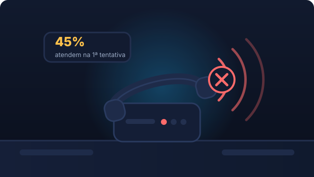
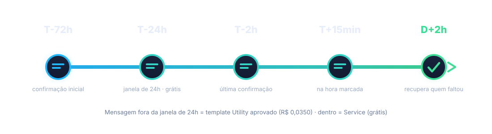

A cadeira vazia
Você paga cadeira, instrumental, material e equipe. O paciente marca, não vem, e a hora passa.
25% a 40% de faltas em clínicas que confirmam por telefone
Confirmação automática de agendamento por WhatsApp
20% a 35% dos agendamentos de uma clínica odontológica são faltas. Você paga cadeira, instrumental e equipe — e o horário passa. Um WhatsApp que confirma sozinho recupera boa parte disso, sem mensalidade por mensagem.
Três sangramentos simultâneos. Qualquer um deles já custa o mês.
Você paga cadeira, instrumental, material e equipe. O paciente marca, não vem, e a hora passa.
25% a 40% de faltas em clínicas que confirmam por telefone
Mensagem às 21h, resposta às 9h do dia seguinte. O paciente já achou outro lugar — e, às vezes, achou mais barato.
79% das clínicas usam WhatsApp; só 34% deixam agendar sozinho

3 atendentes gastando ~50 h/mês ligando para confirmar. Menos de 45% atendem na primeira tentativa. E ainda assim falta.
Taxa de resposta: 40% por ligação · 73% por sequência no WhatsApp
5 perguntas. Leva 40 segundos. Sem cadastro.
Seu resultado
por mês em horário pago e vazio + lead que esfriou
Estimativa baseada em faixas de mercado (no-show de 20–35% sem confirmação automatizada; queda de 30–50% com régua de 4 toques; lead→agendamento de 12% via WhatsApp, 21% entre os que respondem). Não é garantia de resultado.
Quatro peças. A última é a que ninguém faz hoje.
Mensagem no Instagram ou WhatsApp a qualquer hora. O assistente identifica o procedimento, faz duas perguntas e oferece três horários reais da agenda.
Data, hora, profissional, endereço, mapa e orientação de preparo. O paciente sabe exatamente o que esperar.
72h, 24h, 2h e na hora. Cada um com botão de confirmar ou remarcar. É aqui que a falta morre.
Recuperação automática da falta com novo horário, cuidado pós-operatório e recall de limpeza em 6 meses.

Rede de 2 clínicas odontológicas, 900 agendamentos/mês, ticket R$ 220–580 — 5 semanas de operação.
Não é um arquivo. É a operação rodando, com a sua marca e a sua agenda.
Com os seus números, a gente monta a régua e mostra o antes/depois da sua clínica antes de qualquer contrato.
✓
O plano com os seus números está pronto. Toque no botão para enviar pelo WhatsApp ou copie o resumo abaixo.
Sim — e é provavelmente por isso que parte dos seus agendamentos vira falta. A diferença não é mandar mensagem, é confirmar. A régua faz quatro toques em momentos definidos, com botões de confirmar e remarcar, e recupera quem faltou. Se a sua equipe já responde em 5 minutos e já cobra confirmação, o que falta é o painel. Me conta que eu digo se vale.
Por isso o kit usa API oficial com BSP homologado e nunca automação de WhatsApp comum. A mitigação faz parte do checklist: 2FA, Business Manager com admins definidos, templates aprovados e verificação de qualidade do perfil. E a estrutura é validada primeiro em número de teste, antes de tocar no número que atende os pacientes.
Você não usa. O assistente faz a triagem, a régua confirma, o painel mostra o resultado. A única exigência da sua equipe é lançar a agenda 5 minutos por dia. Se preferir, existe a Instalação Assistida, em que eu configuro tudo com você.
Vamos por partes: qual o seu faturamento de atendimentos? Com 25% de falta em 80 atendimentos a R$300, são R$6.000 por mês. O kit custa R$147 e se paga em um dia. A pergunta não é se é caro — é se R$6.000 por mês na mesa é normal para a sua operação.
Funciona igual, com uma diferença técnica: os lembretes de 72h, 24h e 2h antes exigem WhatsApp com API oficial, porque o Instagram não permite envio confiável fora da janela de 24 horas. Se você já tem WhatsApp Business, o kit é plugado. Se não tem, a instalação cobre esse passo.
Ninguém precisa adotar nada. O assistente cuida da parte repetitiva e a equipe só entra quando a IA não entende — com o contexto já montado. No relatório mensal, o tempo da equipe devolvido aparece como uma das linhas.
O assistente não coleta dado de saúde, não diagnostica e não substitui atendimento. Você recebe o contrato de operador (LGPD art. 39), o aviso de privacidade e os textos de política de cancelamento prontos para o seu advogado revisar. A clínica é a controladora dos dados.
Não. Fazemos automação de atendimento e agendamento. Todo texto clínico de preparo e pós-cuidado é validado pelo seu CRO antes de ir para produção — essa é uma condição do kit, não uma recomendação.